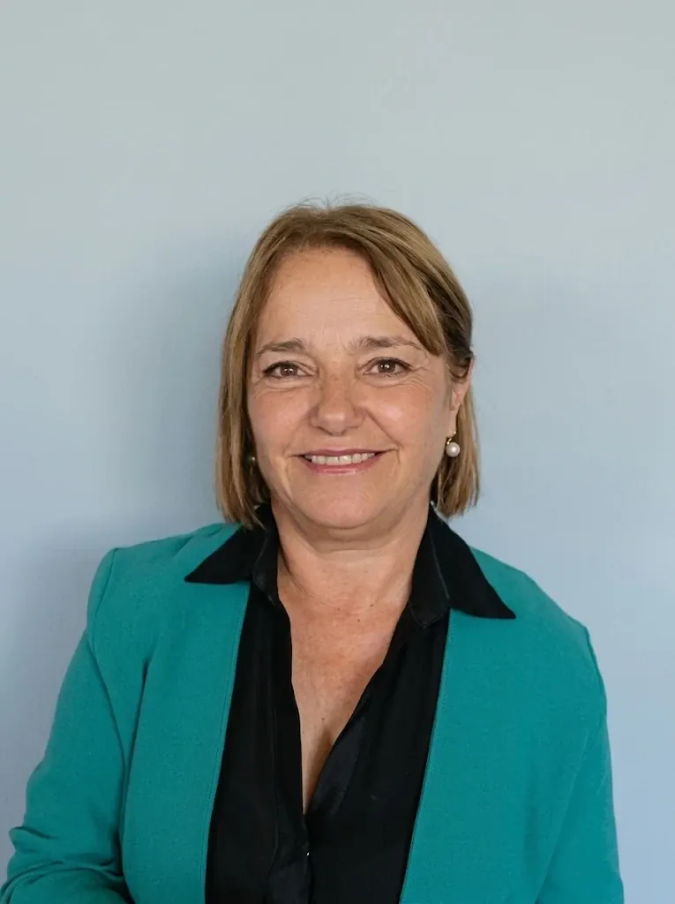
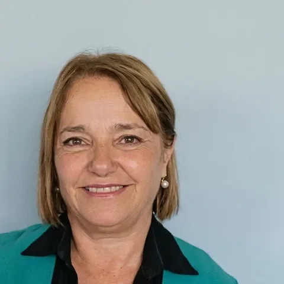
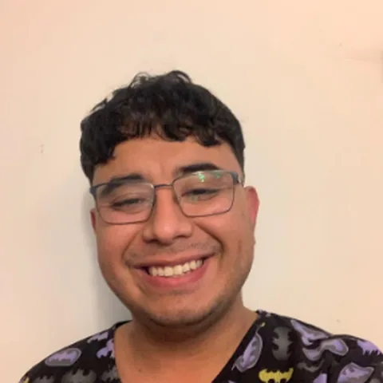
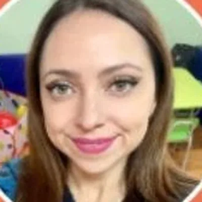

Quiénes somos
Un pequeño comienzo que se transformó en algo mucho más grande
Atendemos a niñas, niños y jóvenes, con foco en la neurodivergencia, ofreciendo terapias individuales a bajo costo y diagnósticos.
Cada niño merece ser escuchado, acompañado y tener la oportunidad de desarrollar todo su potencial.
Nuestra historia
La Fundación Niños del Rey nace a partir de una realidad que no podía pasar desapercibida: la necesidad que existía en tantos niños de recibir apoyo, oportunidades, acompañamiento y, sobre todo, cariño.
Todo comenzó al ver de cerca estas necesidades y comprender que era necesario hacer algo para cambiar esa realidad. Fue así como Andrea Cancino, fundadora de nuestra institución, impulsó este hermoso proyecto con la convicción de que cada niño merece ser escuchado, acompañado y tener la oportunidad de desarrollar todo su potencial.
Lo que comenzó como una iniciativa nacida del compromiso y la sensibilidad hacia la infancia, poco a poco fue creciendo, convirtiéndose en un espacio de apoyo, esperanza y nuevas oportunidades para quienes más lo necesitan.
Este camino no ha sido posible gracias a una sola persona. Detrás de cada avance, cada logro y cada niño al que hemos podido acompañar, existe un equipo de personas que ha entregado su tiempo, esfuerzo, vocación y corazón para hacer realidad este propósito.
Hoy, la Fundación Niños del Rey es el reflejo de un sueño que creció gracias a la visión y perseverancia de Andrea Cancino, y al compromiso de todo el equipo que ha trabajado junto a ella.
Gracias a Andrea y a cada una de las personas que forman parte de este camino, todo lo que hemos construido ha sido posible. Porque cuando existe voluntad de ayudar y un compromiso verdadero con la infancia, un pequeño comienzo puede transformarse en algo mucho más grande.
Nuestra historia sigue creciendo, con la misma motivación que nos vio nacer: trabajar por el bienestar de los niños y construir para ellos un futuro con más oportunidades.

Misión
Trabajar por el bienestar de los niños, brindándoles apoyo, acompañamiento, oportunidades y cariño, para que cada niño sea escuchado y pueda desarrollar todo su potencial.
Visión
Ser un espacio de apoyo, esperanza y nuevas oportunidades para quienes más lo necesitan, construyendo para los niños un futuro con más oportunidades.
Cómo trabajamos
Nuestro enfoque
Foco en la neurodivergencia
Trabajamos con niñas, niños y jóvenes de 4 a 16 años con autismo, TDAH y otras condiciones del neurodesarrollo.
Bajo costo
Cualquier atención cuesta $10.000. Los padrinos, las rifas y las donaciones nos ayudan a sostenerlo.
Enfoque cristiano y respetuoso
Compartimos nuestra identidad desde el inicio para promover un ambiente de respeto mutuo, valorando las creencias de cada persona.
En números
Lo que hemos hecho juntos
- 50niñas, niños y jóvenes atendidos
- +1.000terapias al año
- 6profesionales
- 2021año en que comenzamos
Equipo
Las personas detrás de la fundación
Profesionales que acompañan a cada niño y a su familia.
-

Andrea Cancino
Fundadora
-

Diego Orrico Figueroa
Terapeuta ocupacional
Trabaja con niños y jóvenes con diagnóstico del espectro autista, discapacidad intelectual y déficit atencional. Manejo de la conducta e integración sensorial.
-

Shirli Rascovsky Aqueveque
Terapeuta ocupacional
Evaluación e intervención integral infanto-juvenil: TDA, TDAH, TEA, trastorno conductual, síndrome de Down, discapacidad intelectual, desarrollo psicomotor, parálisis cerebral y desafíos del procesamiento sensorial.
[Nombre]
[Profesión]
[Nombre]
[Profesión]
[Nombre]
[Profesión]
[Nombre]
[Profesión]